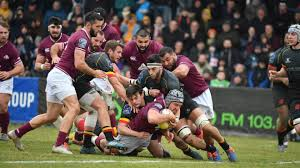

- Rugby Union
- Rugby is the top team sport in Georgia, driven in part by the traditional game lelo burti, which
influenced the national style and nickname
- “Lelos.”
- The Georgian national rugby team has consistently performed well in the Rugby Europe Championship,
winning it nearly every year since 2006 (except 2017), including in 2025.
- Domestic rugby features competitions like the Didi 10 and the club Black Lion, which also competes
internationally.
